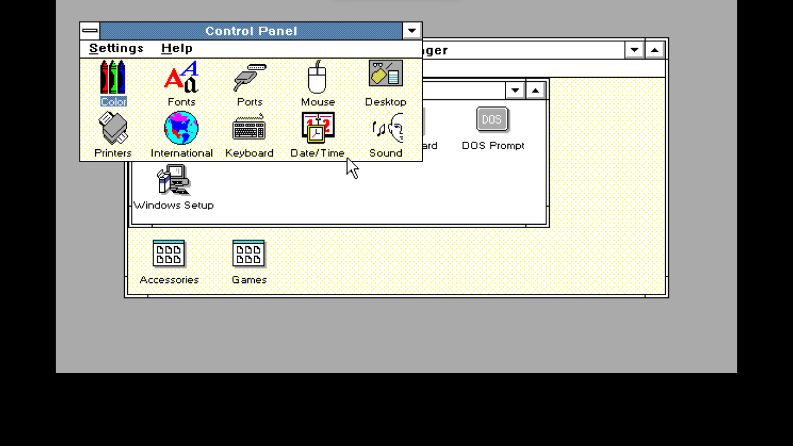

Linux. Windows. 2 very driffent things but yet, so many coders use them.
Today I will be covering both of these operating systems, and why a lot of proffesinal coders use linux. Lets get into it shall we?
The most popular operating system out there. Lets start. The first offical version released in 1985. Also if you want to you can play with some very old windows versions up to windows 95 here.Anyways, it was old. Couldnt't do much. The coolest program there was probably the clock. Moving on to windows 3.0 which was released in 1990. Ah this version is so funny. BUt it wasn't just funny, it was groundbreaking. I gave us a brand new interface, and Icons. Look at these Icons they look so funny.
Then comes windows 3.1. Introduced media player.
Oh boy. Here comes the first omdernized look of windows. Well not really. Here is what it looks like.
Cool am I right? I cant show you guys the other versions, so now Ill just talk.
Then in the year 98, we got you guessed it - windows 98. It was pretty much a major upgrade from windows 95. And also looked nicer. Then we got windows me, and windows 2000. The people who manged to have them thought they were terible. or at least windows me. Windows 200 bought in the active directory. Then came windows xp, which despit the fact I never used it, I would porbably prefer this over windows 11 because it looks, and seems so funny. Then came windows vista. Pretty much no one liked it. Now we are getting into the modern era of windows. We got windows 7. Looks so familier dosen't it? This was a good one. Then we got windows 8 , which was not great. They got rid of the start bar, and everyone was super pissed. They bought it back in windows 8.1, but by then everyone hated this version. Then we got into windows 10, one of the best versions. Then in 2021 we came into windows 11 which we still use today. I wont be going over the history of linux, as that is complicated. But I will go over what is linux.
Linux is very driffent from windows by a lot. Unlike windows which is one distribution, linux is like i dont know 100 distributions. Linux is also Open sourced, and why Is it better for programmers? Open sourced is one of them, but you can also get distros for specific things. like a distro for a begginer or almost everything is ubuntu. A distro for gaming could be Drauger OS. I actually want to switch to ubuntu but I dont want to wipe my disk. Another one is that it is more customizible due to the driffent types of distros. And another one is that it is a lot more secure. But there are some diidvantges. Not everything is avaible on linux. Also to install apps, you got to use terminal. But I would recomend you use a good linux distribution.
So I recomend linux. However Windows does have better feutres and text editors have more avability on windows. However if you cant decide you can dual boot them which means you have a linux distribtuion and a windows version. So that is windows vs linux. And I hoped you liked it, please download brave browser hereso you can tip me with Bat and I will see you next time! Also thanks to my dad who reccomended this topic. c ya - CoderChip